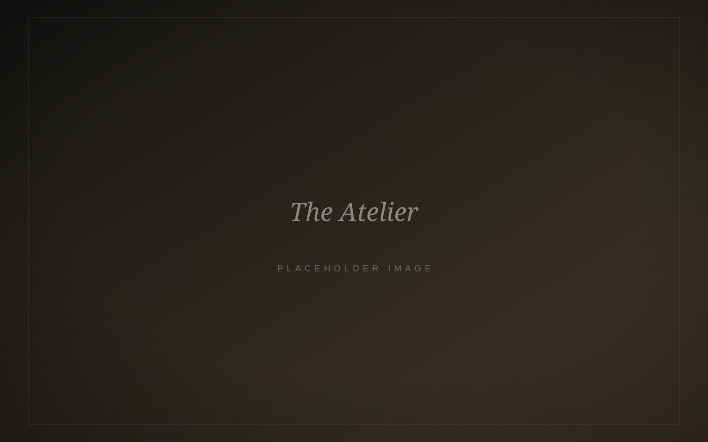
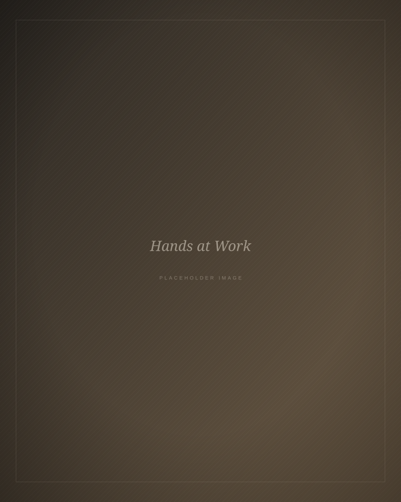

01 · Signature
Bespoke Suits
Placeholder copy. Your suit is drafted from a personal pattern and shaped over several fittings, with a hand-padded canvas and your choice of cloth.
View service: Bespoke Suits
Bespoke Tailoring · Hermanus
Handcrafted suits, shirts and occasion wear, made in our Hermanus atelier to your exact measure. Every garment is cut for one person.
Placeholder copy. My Tailor brings the discipline of traditional tailoring to the Overberg coast. We take an unhurried approach: your measurements, posture and preferences go into a pattern made for you alone.
Discover our services
The Atelier
Placeholder copy. Founded on a love of craft, My Tailor is a small studio where every garment is measured, cut and finished in-house. No two clients stand the same way, so no two patterns are the same.
Whether it is your first commissioned suit or a favourite jacket that needs new life, you will be looked after by the same hands from first consultation to final pressing.
Featured Services
From a first bespoke suit to the outfit you will be married in, each commission is guided by one principle: it should fit you as if it grew there.
Placeholder copy. Your suit is drafted from a personal pattern and shaped over several fittings, with a hand-padded canvas and your choice of cloth.
View service: Bespoke SuitsPlaceholder copy. Wedding tailoring for grooms and their party, coordinated in cloth and detail and ready well before the day.
View service: Wedding SuitsPlaceholder copy. Expert alterations to suits, jackets and trousers, so the clothes you already own fit the way they should.
View service: AlterationsThe Process
Placeholder copy. A bespoke commission typically takes six to eight weeks. Alterations are often ready within a week.
We talk about how you live, what you need and how you like to feel in your clothes.
Detailed measurements and posture notes. Then you choose from our curated cloth library.
Baste and forward fittings refine the line, balance and drape on your body.
Hand-finished and pressed, your garment is ready to wear for years to come.

Private Appointments
Book a complimentary consultation at our Hermanus studio. No obligation, just good advice and a fresh cup of coffee.